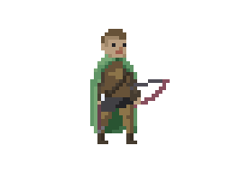

Purpose
The purpose of this project is to take the complex subject of quantum computing and break it down into manageable subsections. These subsections are to be informative and easy to understand, so users would be able to use this site as a guide to studying the subject. Our team is focused on creating a detailed study guide for quantum computing and a walkthrough of the quantum computing simulator QuTip. This problem solving aid includes an in depth explanation of quantum computing, a walkthrough on how to use QuTip, and a series of practice problems and solutions that can be implemented. This project should be of use to programmers, physicists, and general students who show an interest in both quantum computing and the chosen simulator.
It operates similar to a textbook, where the beginning of the guide will feature explanations behind the many aspects of quantum computing. This will be followed by practice problems and solutions that highlight what and how problems can be solved by quantum computing.
This project features 4 important components: Introductory guide to linear algebra and complex numbers, An introduction to quantum computing, the descriptions and implementations of quantum algorithms using QuTip, a link and explanation of QuTip. As this project develops, future modifications would include increasing the number of quantum algorithms walkthroughs the site has.
James ViceComputer Science Area of expertise: Algorithm analysis and implementation. jvice1@kennesaw.view.usg.edu |
|
Jessica BrummelComputer Science Area of expertise: Background information and related learning material jbrumme2@kennesaw.view.usg.edu |
|
Ian GallerApplied Computer Science with Information Security and Assurance Area of expertise: Website design and hosting coordination igaller@kennesaw.view.usg.edu |
|
|  |
Zach DillardComputer Science Area of expertise: Quantum Gates and Qutip implementation zdillar2@kennesaw.view.usg.edu |
 |
John JacobsComputer Science Area of expertise: Project managment with editing jjacob37@kennesaw.view.usg.edu |